XSRF and the Same-Origin Policy
How another site can forge requests from your users’ browsers, what the browser’s Same-Origin Policy and SameSite cookies do to stop it, and XSRF tokens for when the browser isn’t enough
The Attack
The Browser Acts on Your Behalf
- Recall: After you log in, your auth token is stored in a cookie
- The browser attaches that cookie to every request sent to your server
- No matter which page caused the request to be sent
- The request is authenticated as you, even if you didn't choose to send it
- Your browser has many tabs open to many different sites at once
- Some you trust (Your bank, Autolab)
- Some you shouldn't (Clicking a link in a shady email)
Potential Attack
- You are logged into your bank in one tab and have a cookie for your auth token
- You click a link for
freemoney4you.com freemoney4you.comserves you this JavaScript which runs in your browser:
const response = await fetch("https://bank.com/account", {credentials: "include"});
const accountDetails = await response.text();- This request comes from your browser
- Will this attack work?
- Will a request be sent to your bank that contains your auth token?
- Can an attacker use this attack to transfer your money to their account?
Cross-Site Request Forgery
- Cross-Site Request Forgery (XSRF) - A malicious site causes your browser to send a request to another site
- The browser attaches your cookies
- The server sees an authenticated request from you and processes it
- You never intended to send it
- The attacker doesn't need to see the response. The damage is done when the request is processed
- Transfer your money, make an Autolab submission, post in your name, change your email address
XSRF - The Attack
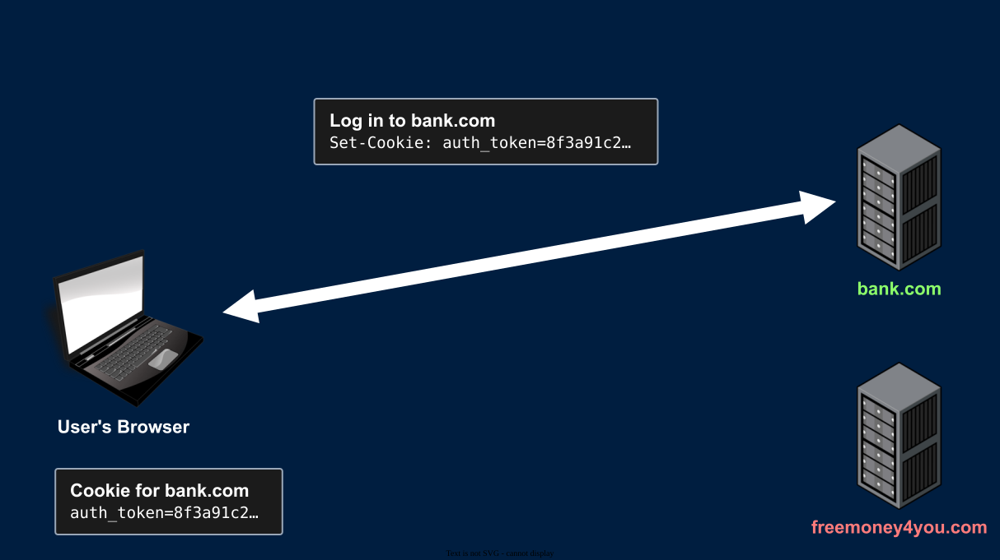
- You log in to bank.com and get an auth token in a cookie
XSRF - The Attack
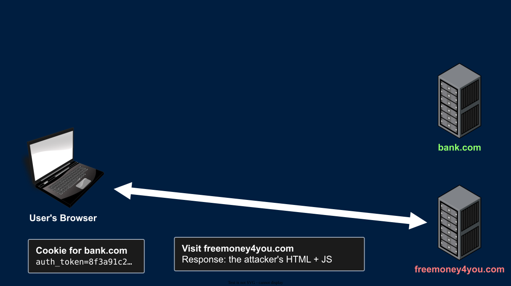
- You click a link in an email: ALL YOUR DREAMS WILL COME TRUE!! JUST CLICK HERE!!!
- Your browser loads the attacker's HTML/JavaScript
XSRF - The Attack
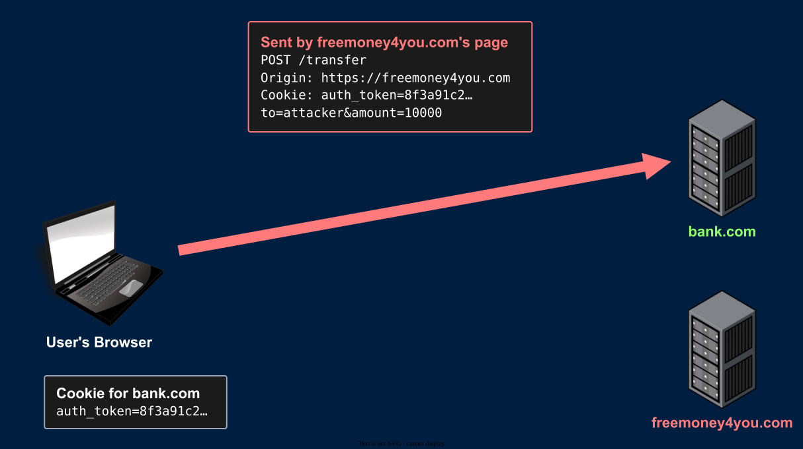
- The attacker's page sends a transfer request to bank.com, and your browser attaches your auth cookie
- The attacker knows the format of the request. Anyone can read bank.com's front end
XSRF - The Attack
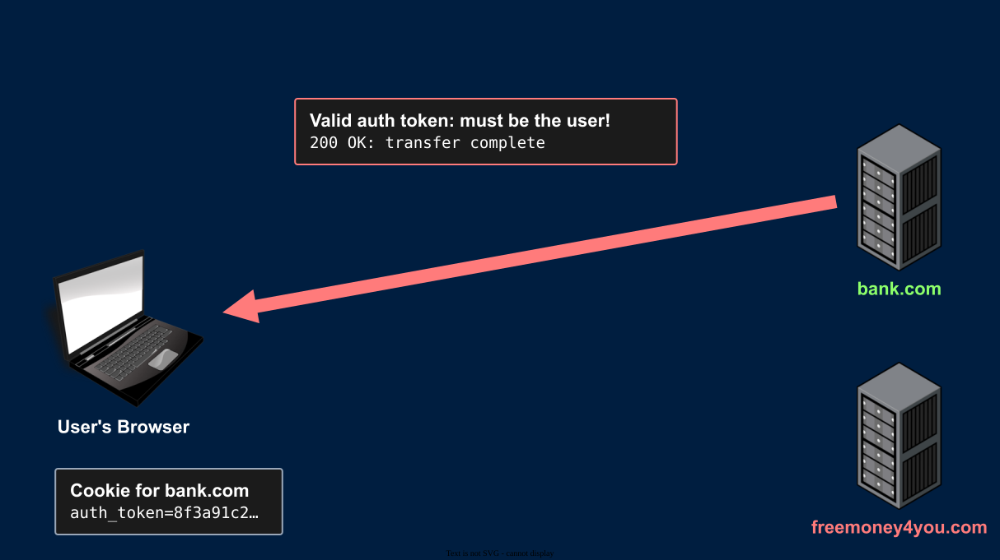
- bank.com sees a valid auth token and processes the request. Hacked!
Sending the Forged Request
<form id="attack" action="https://bank.com/transfer" method="post">
<input type="hidden" name="to" value="attacker">
<input type="hidden" name="amount" value="10000">
</form>
<script>document.getElementById("attack").submit();</script>- A hidden form that submits itself as soon as the page loads. No click needed
- Or an image tag, which sends a GET request (Works in emails too!)
<img src="https://bank.com/transfer?to=attacker&amount=10000">
- Or
fetch, like the potential attack - Will any of these work? It depends on what the browser allows
The Same-Origin Policy
Same-Origin Policy
- The Same-Origin Policy (SOP) is a set of rules enforced by every modern browser
- Content from one origin cannot read content from a different origin
freemoney4you.com's JavaScript cannot read the response frombank.com
- SOP sometimes blocks the entire request
- To understand the rules, we first need to define "origin"
Origin
- An origin is the combination of:
- Protocol -
http,https,ws,ftp - Host -
cse312.com - Port -
443
- Protocol -
- Two URLs have the same origin if all three match exactly
- The path is not part of the Origin
- Origin is what the SOP checks
Site
- A site is broader than an origin
- Site = protocol + domain (Not host)
- Ports and subdomains are ignored
https://api.cse312.comandhttps://cse312.comare the same sitehttps://autograder.cse.buffalo.eduandhttps://buffalo.eduare the same sitehttp://localhost:8080andhttp://localhost:5000are the same site
- For local testing, you can use
http://localhost:8080andhttp://127.0.0.1:8080which are different sites, but both reach your server - This is the definition of site used by the
SameSitecookie directive
Reading vs. Sending
- The SOP does not always stop cross-origin requests from being sent
- It stops cross-origin responses from being read
| Cross-origin... | Examples | SOP |
|---|---|---|
| Writes | Links, redirects, form submissions | Allowed |
| Embeds | Multimedia, JS Scripts, links, CSS | Allowed |
| Reads | Reading a fetch response |
Blocked |
- Writes and embeds are allowed for backward compatibility
Writes and Embeds
- Writes navigate the browser to the other origin
- The response replaces the page that sent the request
- The page that sent the request never sees the response
- Embeds can be used, but not read [via JS. You can still read them in your console]
- The page can display the image, run the script, and apply the styles
- The page's JavaScript can't read the image's pixels or the script's source
- A script from another origin runs as part of your page's origin
- This is how CDNs and analytics scripts work
- It's also why you should only include scripts you trust
The Request Still Arrives
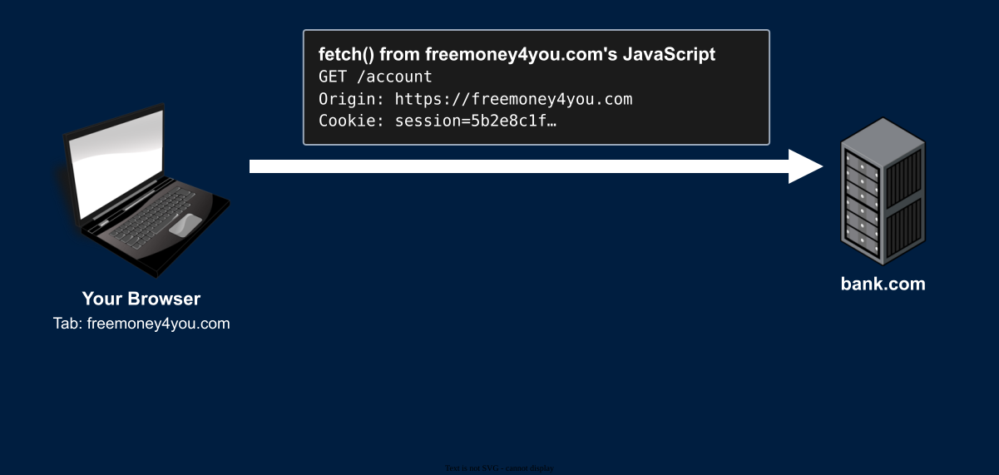
- Cookies will follow the
SameSitedirective rules (A lax cookie would not be sent on this request)
The Request Still Arrives
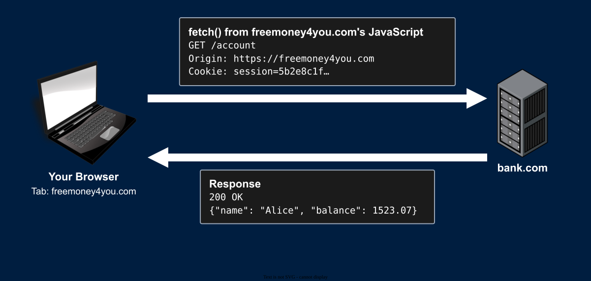
The Request Still Arrives
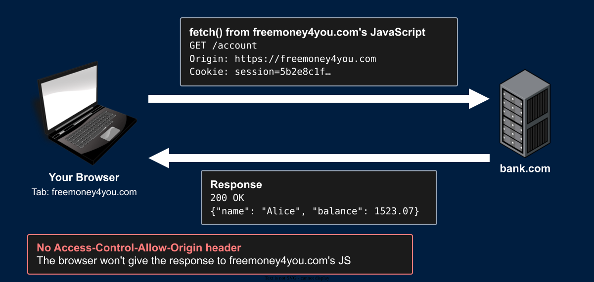
The Request Still Arrives
- Try it: From a page on one origin,
fetcha URL on another origin- Console:
Access to fetch at '...' from origin '...' blocked by CORS - Misleading error message: Devs often blame CORS for SOP behavior
- Console:
- Now check the Network tab and your server's logs
- The request was sent
- Your server processed it and sent a 200 response
- The browser received the response and refused to give it to the JavaScript
- The SOP protects the response. It does not protect your server
Can Any Page Send Any Request?
- If the request is still sent, can
freemoney4you.comsendbank.com:- A
DELETErequest? - A JSON body?
- Any headers they want?
- A
- No! The browser splits cross-origin requests into 2 kinds:
- Simple requests - Sent immediately. The SOP blocks reading the response
- Preflighted requests - The browser asks the server for permission before sending
Simple Requests
A cross-origin request is simple if all of these are true:
- The method is
GET,HEAD, orPOST - Only sets "CORS-safelisted" headers
Accept,Accept-Language,Content-Language,Content-Type
- The
Content-Type, if set, is one of:application/x-www-form-urlencodedmultipart/form-datatext/plain
Every other request is "to be preflighted"
Why These Rules?
- A simple request is a request that an HTML form could already send without any JavaScript
- Forms could send these cross-origin long before
AJAXexisted - Blocking them in
fetchwouldn't make anything safer. An attacker would simply use a form
- Forms could send these cross-origin long before
- Anything else (
PUT,DELETE, a JSON body, a custom header) were impossible to send cross-origin beforeAJAX- Servers were written assuming they would never receive these cross-origin
- SOP predates
AJAXso it was able to block these without breaking existing apps - Browsers won't send them without the server's permission
Preflight
- Before sending a non-simple cross-origin request, the browser sends a preflight request
- Method
OPTIONS, same path - Asks the server whether the real request is allowed
- Method
- If the server does not allow it, the real request is never sent
Preflight
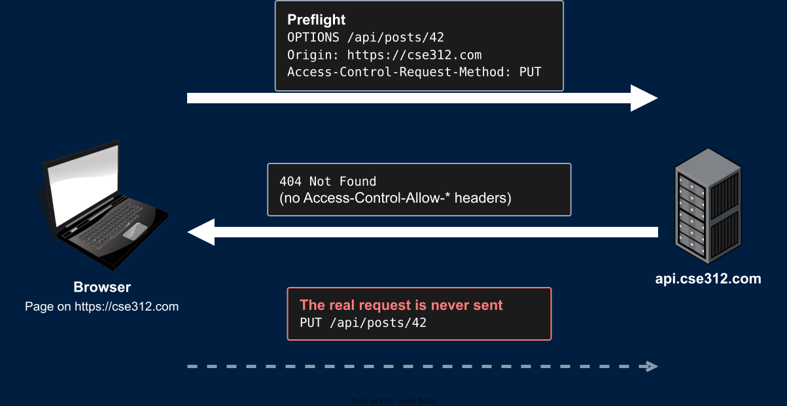
Preflight
- This is how your HW server behaves
- It doesn't handle
OPTIONS, so every preflight fails - No page on another origin can send your server a JSON
POST, aPUT, or aDELETE - Any page on another origin can still send your server a simple request
- It doesn't handle
GET Requests Must Not Change State
GETrequests must never change the state of your server- GETs only get data
- Any page can send them: links, image tags, redirects
Laxcookies are sent when the user follows a link from another site- So
GET /transfer?to=attacker&amount=10000is exploitable even with modern browser defaults
- So
- Browsers also prefetch links, and search engines follow them
- A crawler following your links should not delete anything
XSRF Tokens
When the Browser Isn't Enough
- The SOP and
SameSiteare enforced by the user's browser. We have limited control- An outdated or obscure browser might not implement them properly
- A browser extension might disable them
- Browsers disagree on the default
SameSitevalue
- They don't cover every case either
- Some apps need
SameSite=None(Embedded widgets, cross-site sign-in) SameSitechecks the site, not the origin. Any subdomain of your site can attack you
- Some apps need
- They protect most users, but not 100%
- We need protection on our server that works for every user, in every browser
XSRF Tokens
- The attacker can send requests, but they can't read your pages (SOP)
- So: Put a secret in your pages that the request must send back
- On the server:
- Generate a long random XSRF token when serving a page with a form
- The attacker must not be able to guess the token
- Store this XSRF token as issued to this user
- Embed this XSRF token in the page
- Generate a long random XSRF token when serving a page with a form
- In the browser:
- The XSRF token is a hidden input on the form
- The token is sent with the form submission
XSRF Tokens - The Flow
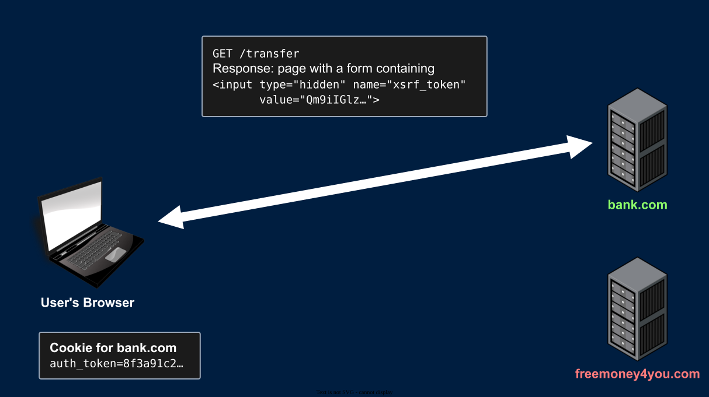
XSRF Tokens - The Flow
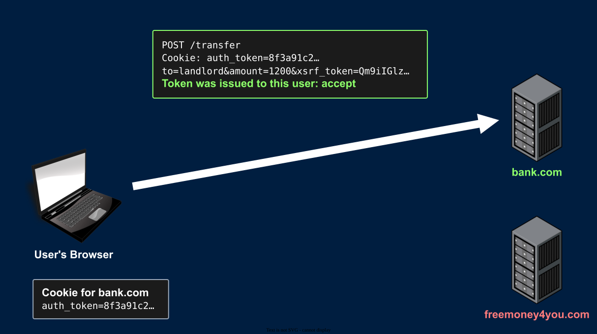
XSRF Tokens - In the Form
- Add a new hidden input to your form for the token
- Generate and inject the token as the value using HTML templates
- Read the token from the request and verify it
<form action="/image-upload" id="image-form" method="post" enctype="multipart/form-data">
<input type="hidden" name="xsrf_token" value="AQAAAjppCA8mhugn2UvwOTaKnVY">
<label for="form-file">Image: </label>
<input id="form-file" type="file" name="upload">
<br/>
<label for="image-form-name">Caption: </label>
<input id="image-form-name" type="text" name="name">
<input type="submit" value="Submit">
</form>XSRF Tokens - Verifying
- On every request that changes state:
- Authenticate the user with their auth token
- Read the XSRF token from the request body
- Verify that this XSRF token was issued to this user
- If the XSRF token was issued to this user
- Accept the request as valid
- If the XSRF token is missing or was NOT issued to this user
- This is an invalid request and might be an XSRF attack
- Respond with
403 Forbidden
XSRF Tokens - The Attack Fails
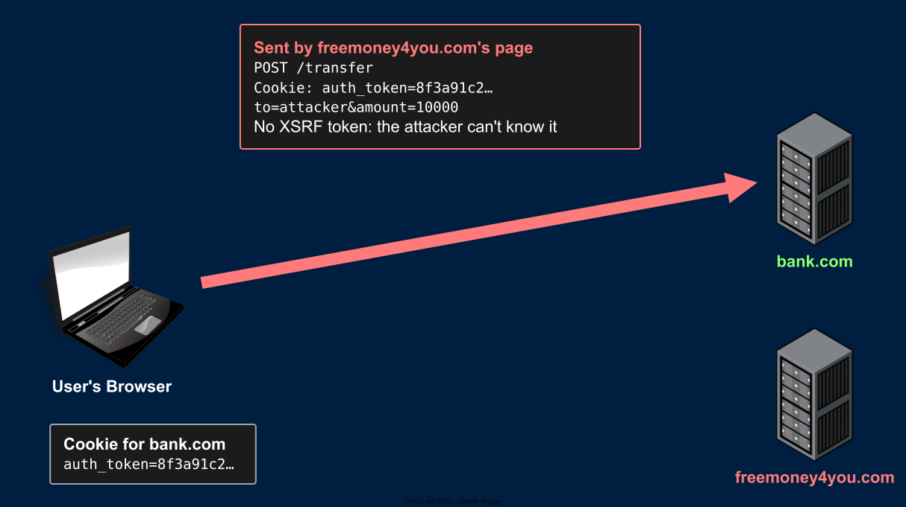
XSRF Tokens - The Attack Fails
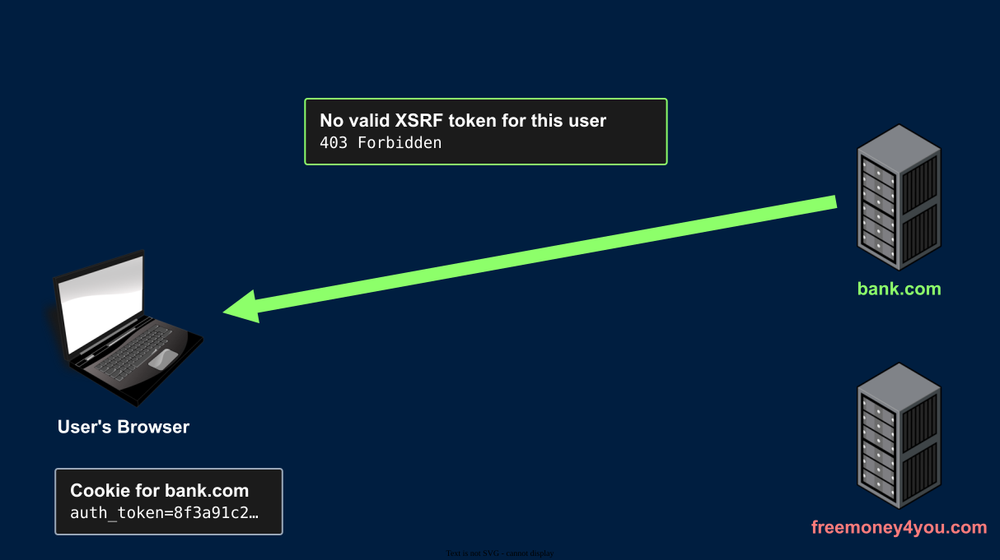
XSRF Tokens - The Attack Fails
- Even if the browser attaches the cookie, the forged request can't contain your XSRF token
- The SOP stops
freemoney4you.comfrom reading your pages
- The SOP stops
- The server rejects the request
- The attacker can get a valid XSRF token for their own account
- But that token was not issued to you, so it's rejected too
- Works in every browser, with any
SameSitesetting
Summary
Summary
- XSRF: Another site makes your browser send a request, with your cookies attached
- The SOP: Cross-origin reads are blocked. Writes and embeds are allowed
- Simple requests are always sent. Non-simple requests are preflighted
SameSitecontrols whether cookies are attached to cross-site requestsGETrequests never change state- XSRF tokens: A secret in your pages that the attacker can't read
- Required on every request that changes state
- Protects every user, in every browser
Next Time
- CORS: Letting other origins in, on purpose
- More attacks, and more layers of defense